This document is to give a simple example to write records count in header of flat / text file output in your Table Conversion. Note that this is case study only and actual coding can be vary to meet your business requirement.
Business scenario:
We have to send out Business Unit information (F0006) per company with below Flat File format:
So through this case study, you can put Record Count in Header, Sequence Number in Body and Total Number of Records in Trailer
Try this,
1. Create Processing Option data structure
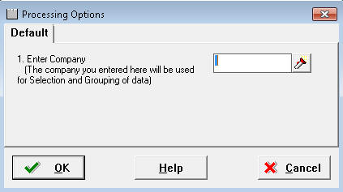
: In case you need to have more complicated selection/grouping you can add additional parameters.
2. Start Table Conversion Design
3. From Data Conversion Director, choose "Data Conversion"
4. At External Data, Select/Attach Processing Option created from step 1
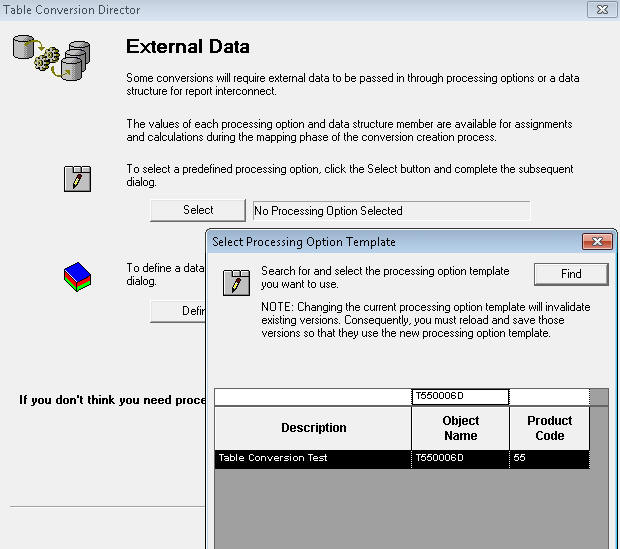
: Now processing option created at step 1 is attached to conversion application.
5. At Select Input, choose (source SQL format data) Table and drag and drop it to right hand side
6. At Data Selection set selection based on Processing Option value
: In case you have more than one parameter, implement it.
7. At Select Output, select tab (Text File) and type output file name (Path and file name including extension if needed) then click (Push Button) Use to move output to right hand side panel. Currently EnterpriseOne Table Conversion has only a single file name and file name can't be changed dynamically.
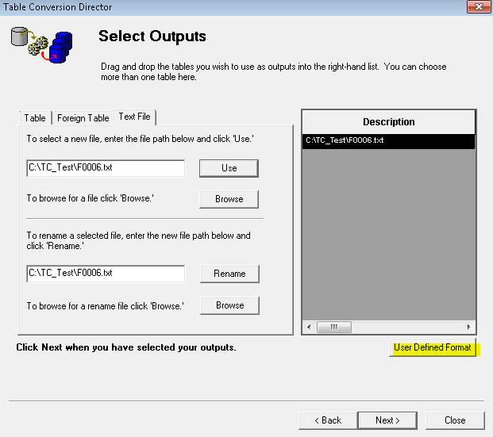
: As stated above output format is written based on output file name you have defined here so it is your duty to set correct path and file name.
8. On same screen, (push button) User Defined Format
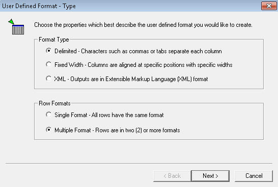
8-1. At User Defined Format - Type, choose Row Format - Multiple Format - Rows are in two (2) or more formats
8-2. At User Defined Format - Column Delimiter, set the value required (e.g., Textual Qualifier "Double Quotation")
8-3. At User Defined Format - Multiple Format Definition, set 3 (1. Header, 2. Body and 3. Trailer)
8-4. At User Defined Format - Multiple Format Names, set distinctive file name (e.g., 01. Header, 02. Body, 03. Trailer) this enable you to make some coding easily.
8-5. User Defined Format - Column Layout (repeat it for Header, Body and Trailer)
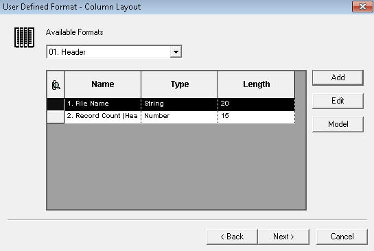
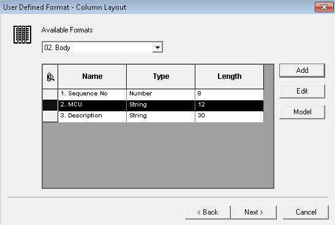
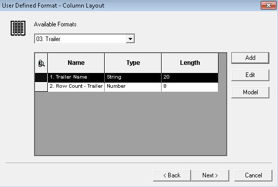
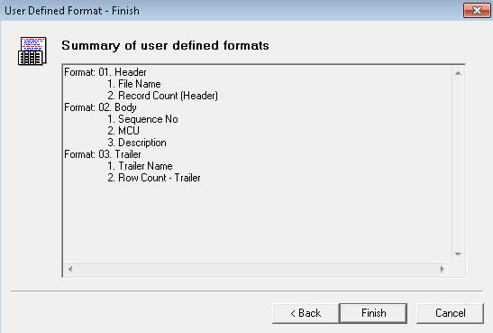
9. At Table Option, select "Clear Output Tables" otherwise values are to be appended based on existing file

: Not to transmit duplicated information, turn on this option and rename then archive it in the designated folder.
10. Write Header at Process Begin event
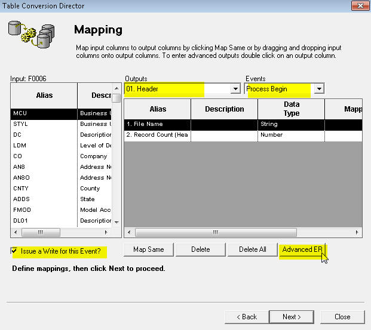

12. Write Body at Row Fetched event

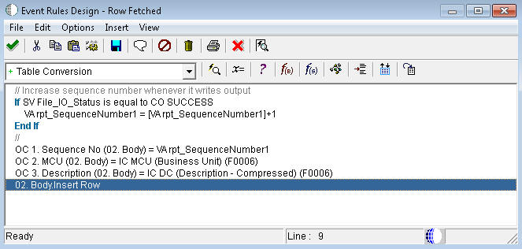
13. Write Trailer at Process End event

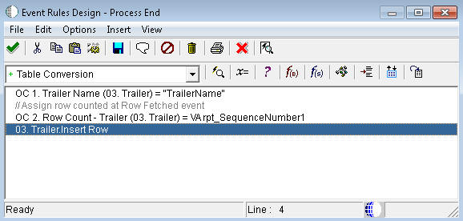
: This event runs only once like End Section event in RDA.
14. Run it and this is the text file created
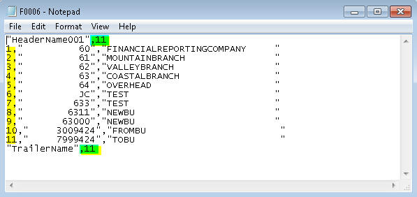
Note: Though this is a case study and a simple implementation same routine can be expanded for more complicated conversion.